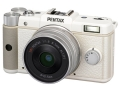

器材库 > APS及其以下画幅可换镜头数码相机 > PENTAX Q

规格总览
产品类型
小型传感器可换镜头数码相机
发布日期
2011-06-23
影像规格
影像传感器
CMOS
影像传感器尺寸
1/2.3英寸
总像素
1275万
有效像素
1240万
色彩滤镜
RGB原色彩色滤镜
色彩空间
RGB
最大解像度
4000×3000
静态图像格式
JPEG, RAW
静态图像尺寸
[4:3]12：4000×3000、[3:2]10：4000×2664、[16:9]9：4000×2248、[1:1]9：2992×2992；RAW[4:3]12M：4000×3000
静态图像质量
精细，很好，好
画幅比
4:3, 16:9, 1:1
短片格式
MPEG4
短片尺寸
[Full HD]1920×1080@ 30fps(16：9)、[HD]1280×720@ 30fps(16:9)、[VGA]640×480@ 30fps(4:3)
防抖系统
SR (Shake Reduction)防抖机构
除尘系统
DRII(Dust Removal II)防尘系统
镜头和对焦
镜头卡口
Pentax Q
对焦模式
脸部识别、追踪、自动对焦(25点)、手动对焦
手动对焦
支持
曝光控制
测光模式
中央重点测光, 评价测光, 点测光
测光范围
（ISO125）1EV~18EV
快门速度
30-1/2000
曝光补偿
±2EV
连拍
约5.0fps，最多连拍：约5张（JPG）、；约1.5fps，最多连拍：约100张（JPG）
闪光灯
内置闪光灯
弹出式
闪光指数
5.6(ISO125・m)/7(ISO200・m)
闪光补偿
-2 至 +1EV
闪光同步模式
后帘同步, 慢速同步, 防红眼慢速同步
取景器/显示屏
LCD类型
彩色TFT LCD
LCD尺寸
3.0英寸
LCD像素
46万
视野率
100%
文件输入/输出
存储卡
SD/SDHC, SDXC
数据接口
USB2.0
视频/音频接口
HDMI 输出
电源
电池
D-LI68
续航能力
约250张
机身规格
材质
不锈钢
颜色
黑色, 白色
尺寸
98.0x57.5x31.0mm
重量
180g
该产品暂无存档的网友点评
产品图 / 样片
评测 / 相关文章
该产品暂无存档的评测文章
相关文章
- ［资讯］日本Suono推出宾得 Q7/Q10/Q纯棉相机包 （原站已下线）
- ［资讯］宾得公布PENTAX Q最新固件 （存档）
- ［资讯］提升AF性能 宾得PENTAX Q最新固件 （原站已下线）
- ［试用］史上最便宜的玩法——PQ转接CS口镜头 （原站已下线）
- ［资讯］Hakubaphoto推出PENTAX Q专用相机套 （原站已下线）
- ［资讯］日本Suono专为PENTAX Q推出纯棉相机包 （原站已下线）
- ［影像］宾得Pentax Q官方样张赏析 （原站已下线）
- ［资讯］宾得官方正式发布pentax Q相机 （原站已下线）
- ［资讯］宾得PENTAX Q （原站已下线）
- ［资讯］宾得创新研发 全球最小EVIL相机 （原站已下线）